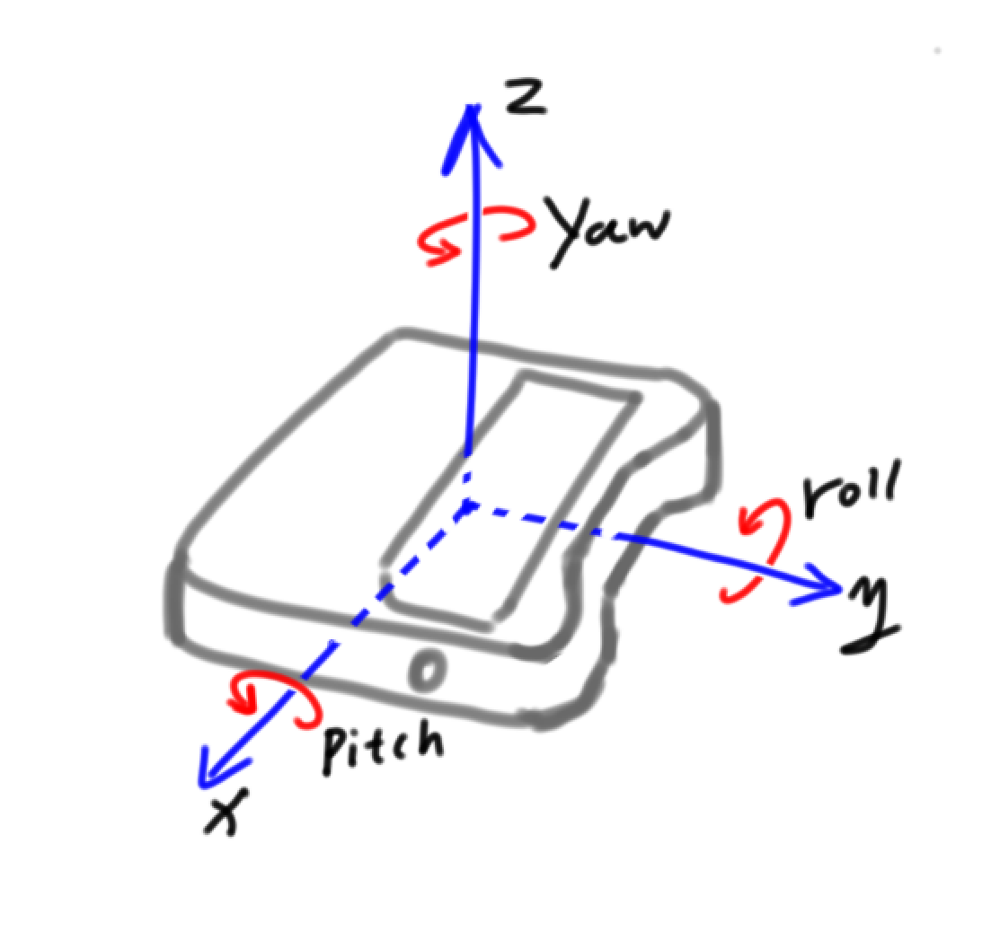

motion_sensor — 板载姿态传感器¶
motion_sensor 模块的主要功能与函数
姿态传感器说明¶
如上图所示，roll，pitch（翻滚角，俯仰角）的方向以右手螺旋定则为标准。
小程水平放置时roll和pitch都为 0°
roll的范围： -90° ~ 90°
pitch的范围： -180° ~ 180°
功能相关函数¶
-
motion_sensor.get_roll()¶ 获取姿态角的翻滚角，返回的数据范围是
-90 ~ 90
-
motion_sensor.get_pitch()¶ 获取姿态角的俯仰角，返回的数据范围是
-180 ~ 180
-
motion_sensor.get_yaw()¶ 获取姿态角的偏航角，返回的数据范围是
0 ~ 360，由于小程板载的传感器是六轴传感器，没有电子罗盘。所以实际上偏航角只是使用了Z轴角速度的积分。它存在着积累误差。如果是想获得真实偏航角的，这个API不适合使用。
-
motion_sensor.get_rotation(axis)¶ 获得小程在三个轴上转动的角度，以逆时针转动方向为正方向，参数：
- axis 字符串类型，以
x，y，z代表小程定义的坐标轴。
- axis 字符串类型，以
-
motion_sensor.reset_rotation(axis = "all")¶ 初始化绕三个轴转动的当前角度为0，
get_rotation()函数将从 0 开始计算，参数：- axis 字符串类型，以
x，y，z代表小程定义的坐标轴,all代表全部的三个轴。也是这个函数的默认值。
- axis 字符串类型，以
-
motion_sensor.is_shaked()¶ 检测小程是否有被摇晃，返回值是布尔值，其中
True表示小程被晃动了，False表示小程未被晃动。
-
motion_sensor.get_shake_strength()¶ 如果小程被摇晃了，这个函数可以获得摇晃的强度，返回值的数值范围是
0 ~ 100， 数值越大，晃动的强度就越大。
-
motion_sensor.is_tilted_left()¶ 检测小程是否向左倾斜，返回值是布尔值，其中
True表示小程向左倾斜了，False表示小程未向左倾斜。
-
motion_sensor.is_tilted_right()¶ 检测小程是否向右倾斜，返回值是布尔值，其中
True表示小程向右倾斜了，False表示小程未向右倾斜。
-
motion_sensor.is_ears_up()¶ 检测小程是否耳朵向上，返回值是布尔值，其中
True表示小程耳朵朝上，False表示小程耳朵没有朝上。
-
motion_sensor.is_ears_down()¶ 检测小程是否耳朵向下，返回值是布尔值，其中
True表示小程耳朵朝下，False表示小程耳朵没有朝下。
-
motion_sensor.is_display_up()¶ 检测小程是否表情面板朝上，返回值是布尔值，其中
True表示小程表情面板朝上，False表示小程表情面板没有朝上。
-
motion_sensor.is_display_down()¶ 检测小程是否表情面板朝下，返回值是布尔值，其中
True表示小程表情面板朝下，False表示小程表情面板没有朝下。
-
motion_sensor.is_upright()¶ 检测小程是否直立，返回值是布尔值，其中
True表示小程直立，False表示小程没有直立。
-
motion_sensor.get_acceleration(axis)¶ 获取三个轴的加速度值，单位是
m/s^2，参数：- axis 字符串类型，以
x，y，z代表小程定义的坐标轴。
- axis 字符串类型，以
-
motion_sensor.get_gyroscope(axis)¶ 获取三个轴的角速度值，单位是
°/秒，参数：- axis 字符串类型，以
x，y，z代表小程定义的坐标轴。
- axis 字符串类型，以
程序示例1：¶
import codey
import time
while True:
roll = codey.motion_sensor.get_roll()
pitch = codey.motion_sensor.get_pitch()
yaw = codey.motion_sensor.get_yaw()
print("roll:", end = "")
print(roll, end = "")
print(" ,pitch:", end = "")
print(pitch, end = "")
print(" ,yaw:", end = "")
print(yaw)
time.sleep(0.05)
程序示例2：¶
import codey
while True:
if codey.motion_sensor.is_shaked():
print("shake_strength:", end = "")
print(codey.motion_sensor.get_shake_strength())
程序示例3：¶
import codey
while True:
if codey.motion_sensor.is_tilted_left():
print("tilted_left")
if codey.motion_sensor.is_tilted_right():
print("tilted_right")
if codey.motion_sensor.is_ears_up():
print("ears_up")
if codey.motion_sensor.is_ears_down():
print("ears_down")
if codey.motion_sensor.is_display_up():
print("display_up")
if codey.motion_sensor.is_display_down():
print("display_down")
if codey.motion_sensor.is_upright():
print("upright")